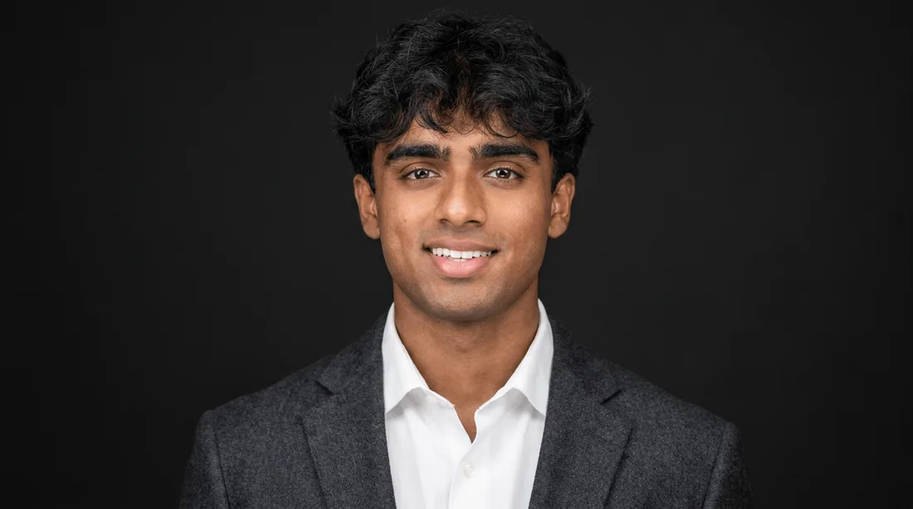
Engineering, from the simulation to the cockpit.
I study mechanical engineering at Kennesaw State with a focus on aerospace. I simulate wake buffeting on tandem wings in ANSYS Fluent, spent summer 2026 as a reliability engineering intern at International Paper, and fly as an FAA private pilot.
I'm looking for a summer 2027 internship in aerospace engineering, or in aviation business and operations, where I can connect design work with how aircraft are actually flown.
Selected work
-
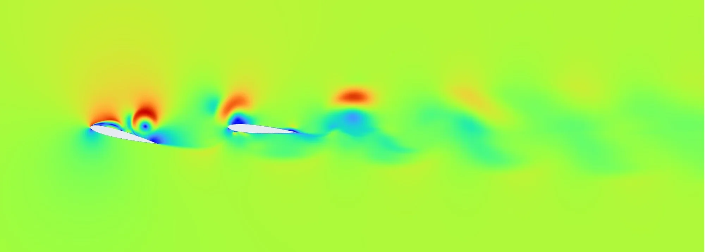
Wake-induced buffeting on tandem wings
CFD research in ANSYS Fluent, KSU 2026
Showed that a stalled front wing's wake wipes out the rear wing's lift at one chord of spacing.
-
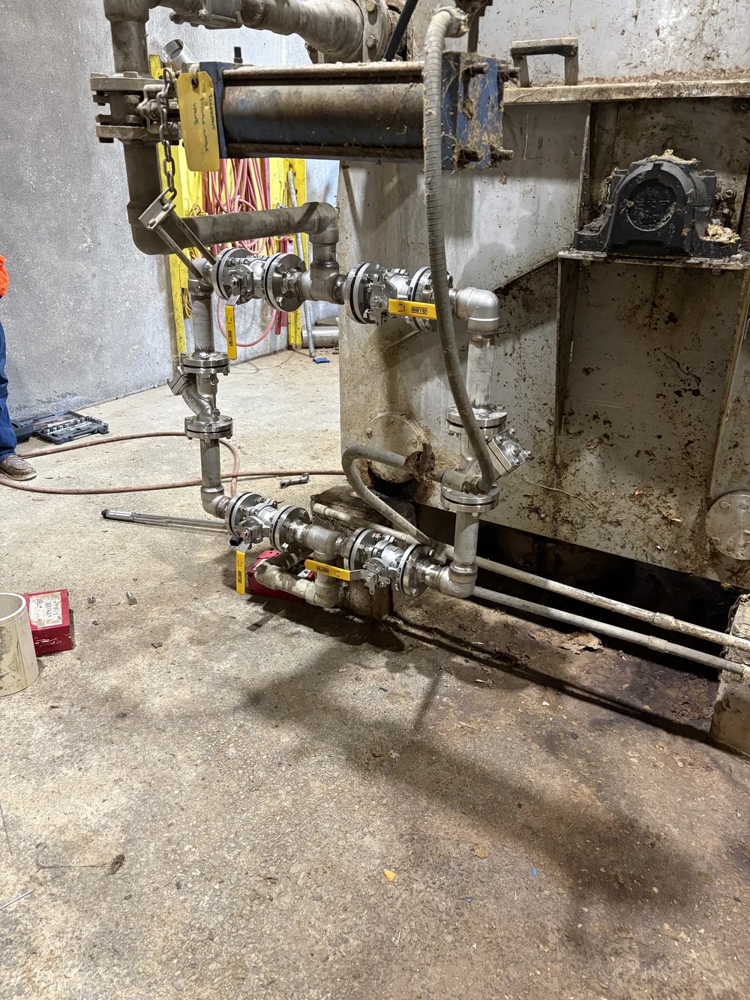
Elephant Pump water filtration
Reliability engineering intern, International Paper 2026
Led a $12K project from scoping through 5 contractor bids to an on-budget install.
-
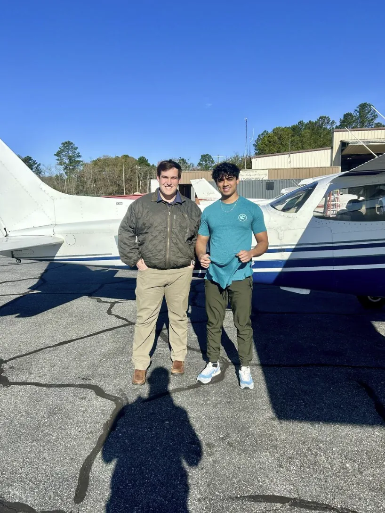
FAA private pilot
Eagles of America, since 2024
Certificated in August 2026 with 75+ hours. Instrument rating in training.
-
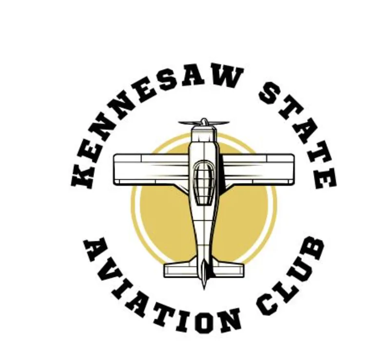
Aviation Club at KSU
President and founder, since 2025
Started the university's first aviation club and wrote its constitution.
-
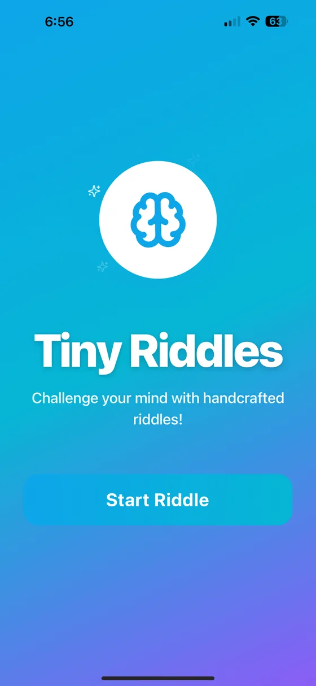
Tiny Riddles
iOS app, React Native and Expo
Built and shipped an offline-first puzzle app to the App Store.
Undergraduate research, Kennesaw State, 2026
Wake-induced buffeting on tandem wings
A computational study of a tandem NACA 0012 configuration at Re = 2.5 × 10⁵ in ANSYS Fluent. With Musa Baig, mentored by Prof. Gaurav Sharma, as part of KSU's First-Year Undergraduate Research Program.
When two lifting surfaces fly close together, as in tandem drones or a fighter's tail at high angle of attack, the turbulent wake from the front surface can shake the one behind it. Left unchecked, that buffeting speeds up fatigue and hurts control. We modeled what a stalled front wing's wake does to the wing behind it.
| Solver | Pressure-based, 2D planar transient |
|---|---|
| Turbulence model | Transition SST, curvature correction, Kato-Launder, production limiter |
| Mesh | Structured C-H hybrid, boundary-layer inflation, wake refinement |
| Reynolds number | 250,000 |
| Mach number | 0.12 |
| Angle of attack | Front 14° (stalled), rear 0° |
| Chord spacing | X/c = 1.0 |
| Time step | Δt = 1×10⁻⁵ s, 0.137 s total flow time |
Results from Fluent
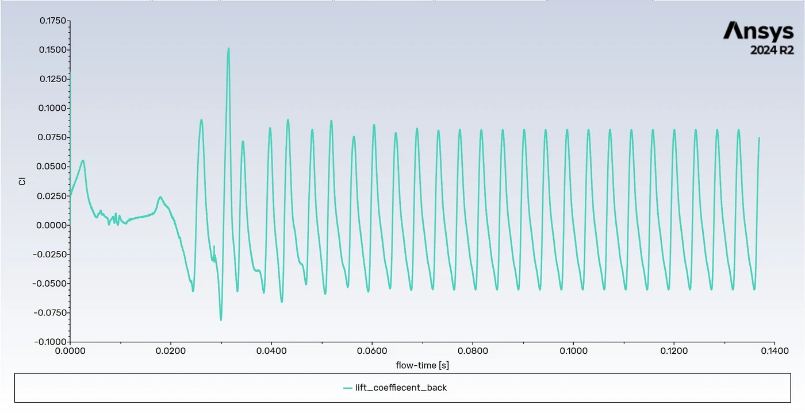
The rear airfoil buffets hard and symmetrically, with CL swinging from −0.072 to +0.082 around a near-zero mean. At this spacing the wake wipes out its lift.
How much lift each wing carries
What we found
- Front airfoil lift oscillates between CL ≈ 0.103 and 0.133, with periodic vortex shedding consistent with a Strouhal number near 0.2.
- Front drag settles into a cycle between CD ≈ 0.021 and 0.031, matching alternating shedding from the stalled leading edge.
- The rear airfoil loses its effective angle of attack in the impinging wake, so its time-averaged lift is negligible.
- The Transition SST model with the Kato-Launder correction captured the unsteady, separated flow. Residuals settle into a stable limit cycle at the shedding frequency rather than failing to converge.
What's next
- Sweep the spacing from X/c = 0.1 to 1.0 to map the full buffeting landscape.
- Run RMS analysis on the CL histories to measure buffeting amplitude at each spacing.
- Apply FFT analysis to find the dominant buffeting frequencies and Strouhal number trends.
- Identify the spacing thresholds that minimize wake-induced buffeting for tandem drone and aircraft layouts.
Engineering intern (reliability), International Paper, Rome GA, summer 2026
The Elephant Pump water filtration project
I led this project end to end, from scoping the system to getting it installed on budget.
- Scoped the filtration system and evaluated bids from 5 contractors.
- Negotiated pricing and delivered the $12K project on budget.
- Used SAP (CMMS) and Power BI to manage PM schedules and redesign reliability dashboards, improving visibility into maintenance compliance.
- Supported outage planning and root cause failure analysis on rotating equipment, working hands-on with industrial pumps, fluid systems and P&IDs.
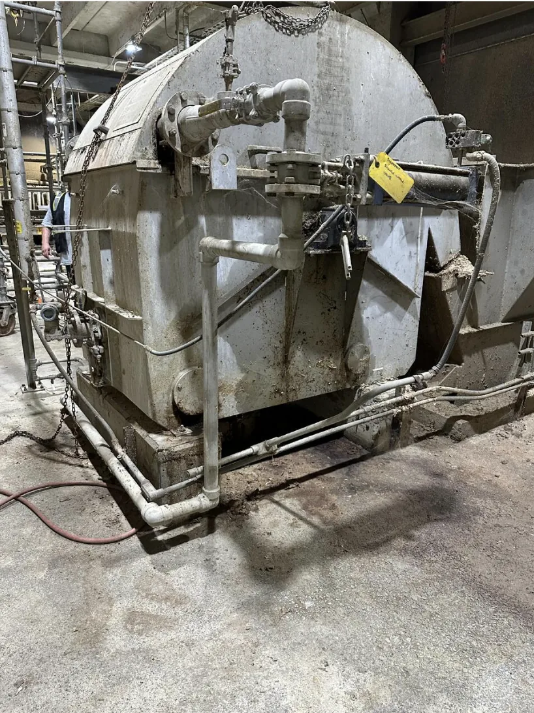
Eagles of America, since May 2024
FAA private pilot
I earned my Private Pilot certificate in August 2026 after more than 75 hours of flight time, applying FAA navigation, meteorology and safety regulations in real operations. Now I'm training for my instrument rating, flying with Eagles of America and in independent rental aircraft.
- Certificate
- Private pilot
- Earned
- Aug 2026
- Next rating
- Instrument
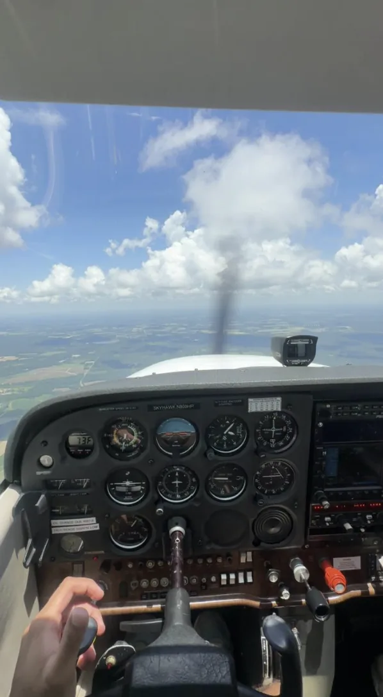
President and founder, since September 2025
Aviation Club at KSU
I founded Kennesaw State's first aviation club to bring together students who want to work in aerospace, fly, or both.
- Wrote and ratified the club constitution, setting bylaws for governance, safety and university compliance.
- Coordinate partnerships with industry professionals and plan networking and educational events.
- Guide members toward internships, mentorships and certifications.
Personal project
Tiny Riddles
A daily brain-teaser app for iPhone that I built with React Native and Expo and shipped to the App Store. It's deterministic and works fully offline, with logic and wordplay categories, three difficulty levels, hints, saved riddles and a daily streak.
I worked through release-blocking issues during TestFlight and App Store review with repeated rounds of testing.
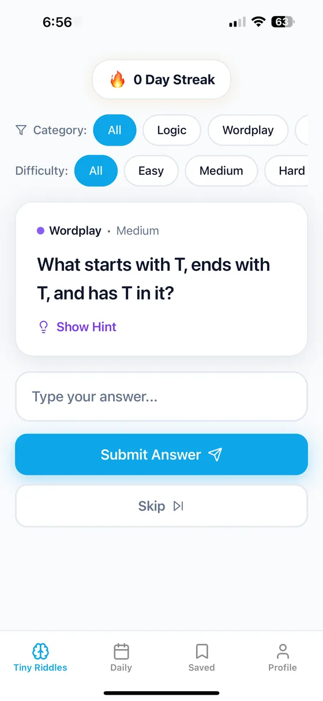
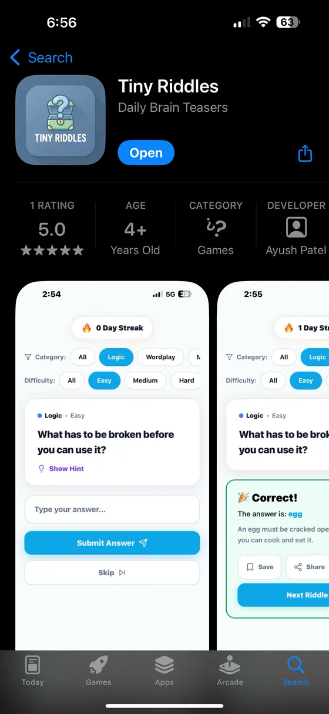
Experience
Engineering Intern (Reliability), International Paper
Led the $12K Elephant Pump water filtration project. Managed PM schedules and redesigned reliability dashboards in SAP (CMMS) and Power BI. Supported outage planning and RCFA on rotating equipment.
Licensed Real Estate Agent, Keller Williams
Prospect sellers across Marietta and Kennesaw by cold calling expired and for-sale-by-owner listings. Prepare comparative market analyses and seller net sheets, and manage the lead pipeline in Command CRM and Excel.
Undergraduate Researcher, Kennesaw State University
CFD study of wake-induced buffeting on tandem NACA 0012 airfoils in ANSYS Fluent.
President and Founder, Aviation Club at KSU
Founded the university's first aviation club, wrote its constitution, and run industry partnerships and events.
Private Pilot, Eagles of America
Private Pilot certificate earned August 2026 with 75+ flight hours. Instrument rating in training.
Engineering
- ANSYS Fluent
- SolidWorks
- MATLAB
- Computational fluid dynamics
- Numerical analysis
Operations and data
- SAP (CMMS)
- Power BI
- Excel
- FAA regulations and flight operations
- React Native
Professional
- Project management
- Negotiation
- Client relations
- Data analysis
- Event coordination
- Cross-functional collaboration
Kennesaw State University, Marietta GA
GPA 3.83 / 4.0Bachelor of Science in Mechanical Engineering, expected May 2028. Coursework: Calculus I–III, Linear Algebra, Physics I and II, Chemistry I and II, Technical Computing (MATLAB), Engineering Graphics (SOLIDWORKS), Intro to Flight.
Let's talk about summer 2027.
I'm open to internships in aerospace engineering, aviation operations and aviation business.